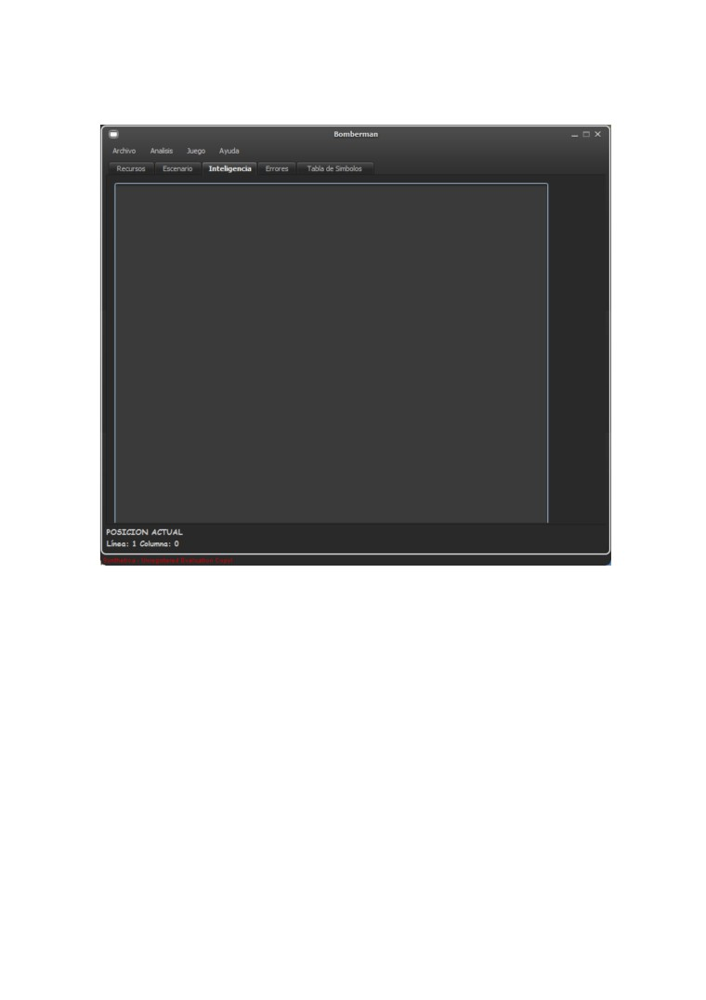
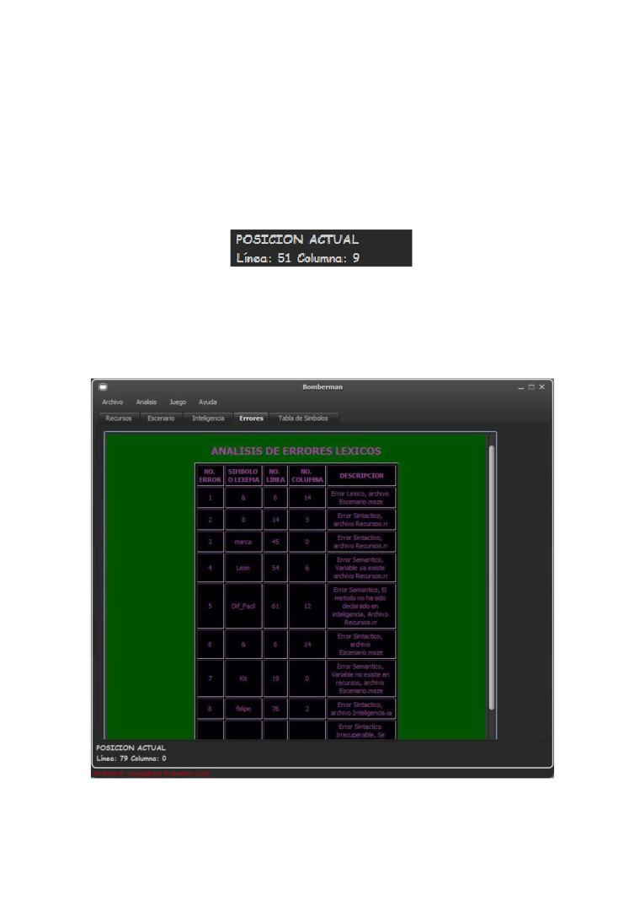
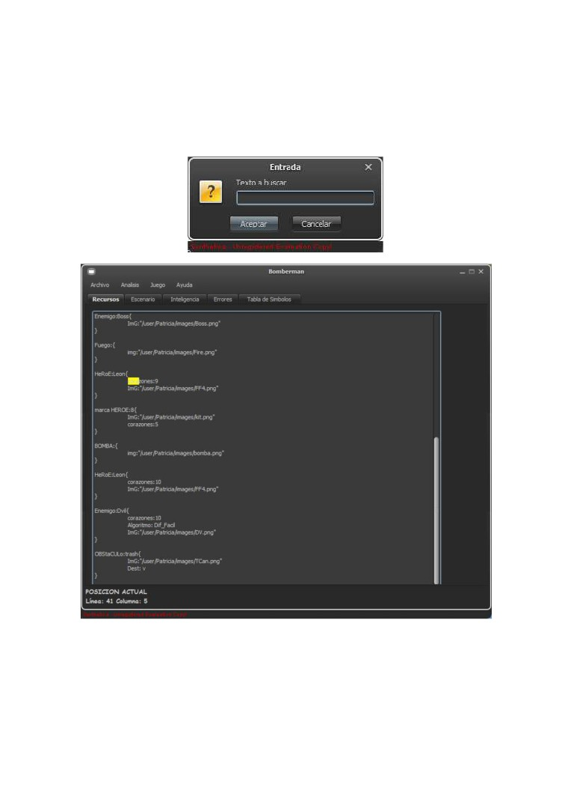
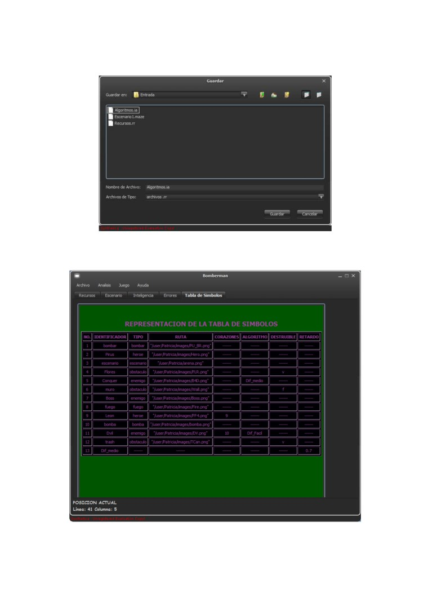
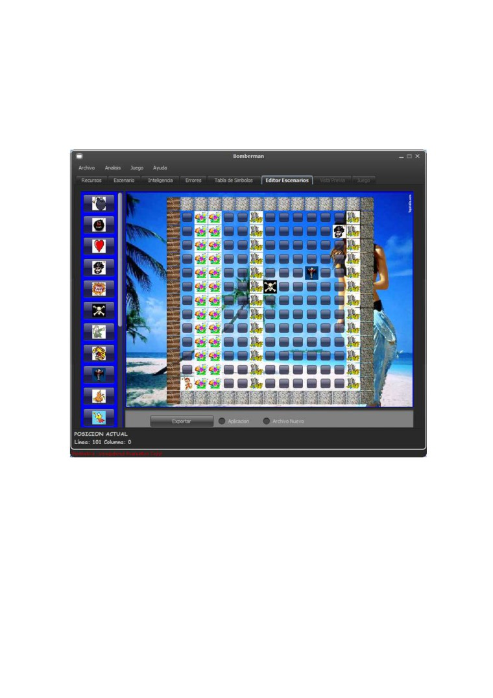
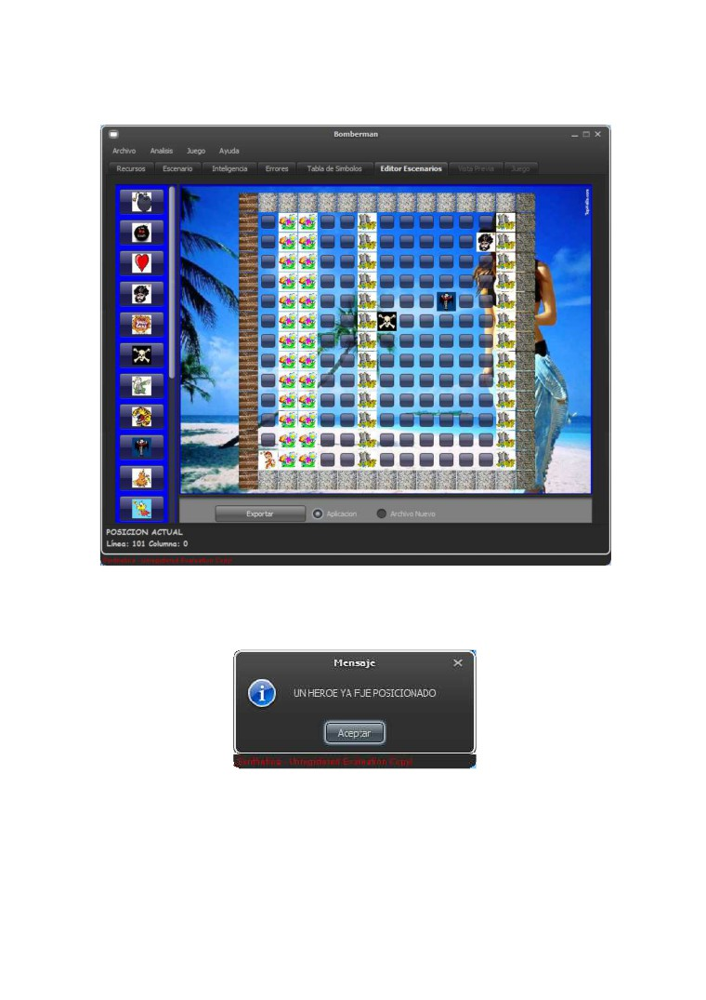
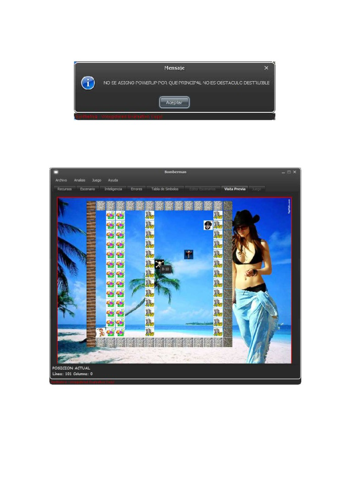
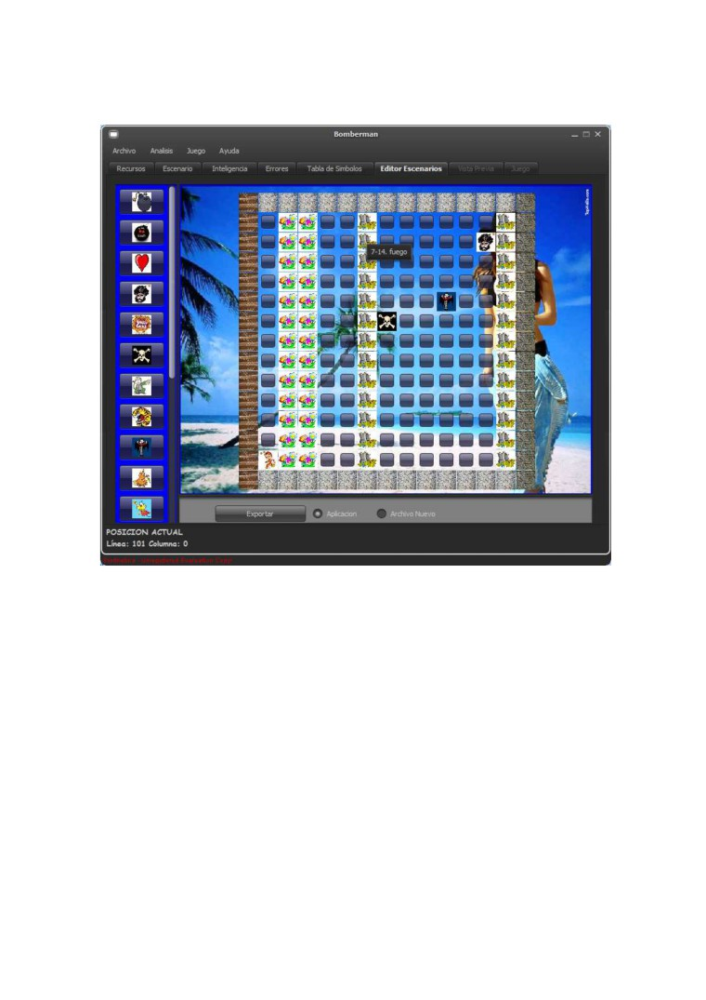
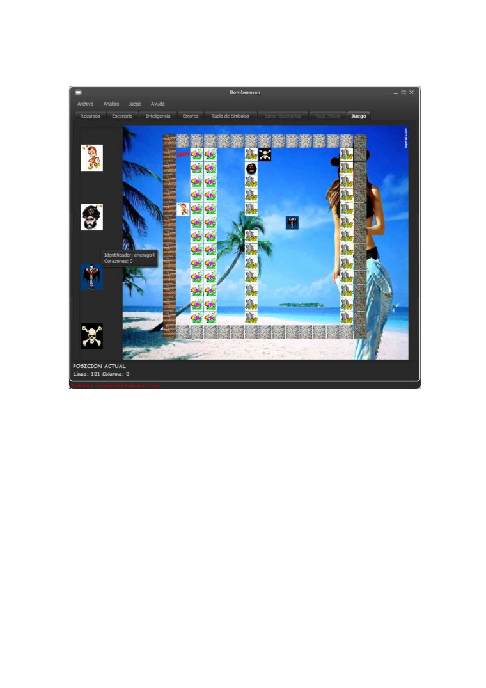
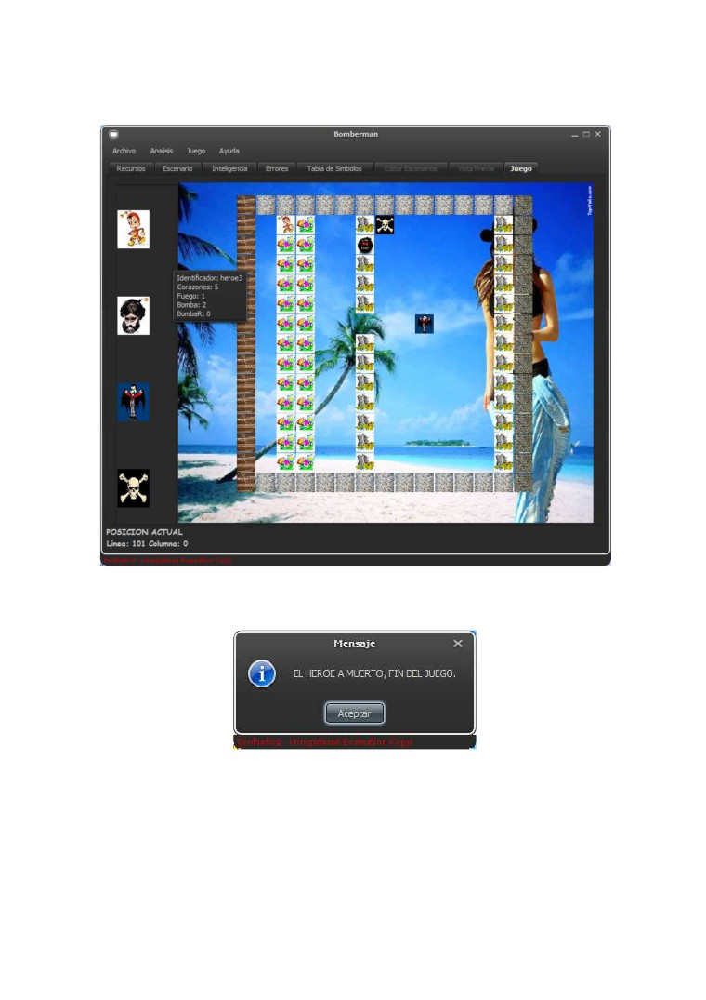

Manual de usuario
Introducción
La aplicación consiste en la implementación de un analizador de textos que en base a 3
archivos que contienen todas las entradas para ejecutar un juego de “bomberman” pueda
determinar los detalles y propiedades para la ejecución del mismo, en este paso para la
creación del juego se incluye un analizador de palabras sencillo que indica si los archivos
de entrada contienen errores en los caracteres no validos o el orden de los caracteres
específicamente definidos, así como la ejecución del juego solamente si los archivos son
correctamente validos.
Objetivos
• Evaluar cadenas de entrada y determinar su aceptación en el lenguaje.
• Detallar los errores cometidos por los caracteres que no logran cumplir con
propiedades de cada archivo.
• Expresar los resultados plasmándolos en un archivo para que este a la disposición
para la observación en cada ejecución de análisis.
La aplicación comienza con una interfaz bastante accesible y entendible como la siguiente:

En el borde superior de la ventana se pueden observar las opciones con las cuales cuenta
la aplicación, el usuario podrá realizar archivos de forma manual o bien cargar un archivo
con extensión .rr(archivo recursos), .maze(archivo escenario) o .ia(archivo inteligencia)
que son los que soporta la aplicación y automáticamente cargara a la pantalla cada
archivo con la extensión valida y en su respectiva pestana.

Cuando el usuario presione sobre cualquiera las pestanas podrá elegir en las diferentes
actividades a realizar. Cuando el usuario haya terminado escribir un archivo o de cargar un
archivo, este tendrá la opción de realizar un análisis sobre el texto escrito en el texto de
cada entrada, cada vez que el usuario realice un evento importante de movimiento sobre
los caracteres escritos dentro de la pantalla de escritura aparecerá un conteo tanto de
línea y de columna, indicando la posición del cursor de escritura sobre el área de texto.
Cuando el análisis haya sido realizado el usuario podrá ver el resultado de la tabla de
símbolos o bien ver los errores cometidos para poder corregirlos, Cuando el texto
analizado contiene errores se podrá observar en una página del navegador indicando
detalles de los mismos (si la opción se realiza desde la pestana desplegable de mostrar
errores) o bien dentro de la aplicación en la pestana de errores, como este:

La aplicación también cuenta con un buscador de palabras para facilitar la búsqueda de
palabras especificas cuando el área de texto abarca gran cantidad de caracteres y resulta
difícil observar.
El usuario podrá guardar el texto que haya sido escrito, cargado o modificado para
someterlo a un posterior análisis. En las otras pestanas de la aplicación el usuario podrá
ver esta ayuda y el manual técnico en caso de querer verlo.

Para ver las fichas que el usuario podrá disponer se podrá dirigir a la tabla de símbolos
para observar cuales cumplieron con el lenguaje.

Se cuenta con la opción de poder generar escenarios a través de un panel de forma grafica
que es seleccionando los ítems con que se cuentan hasta las posiciones del tablero de la
forma siguiente(solamente cuando no existen errores en los archivos previamente
cargados):
Cuando se quiera utilizar el escenario que está realizando se debe seleccionar la opción de
aplicación y presionar el botón de exportar y así se exportara hacia la aplicación para
cuando se desee volver a utilizar el escenario creado o bien se puede seleccionar la opción
de exportar la lista de lo creado hacia un archivo de texto plano:

Cabe mencionar también que cuando se quiera realizar movimientos no validos o no
permitidos con los ítems en base los ítems de power-up la aplicación mostrara mensajes
de advertencia de que no se puede realizar la acción:

Estos son los mensajes más comunes, entre otros.
Al volver a realizar un análisis sobre los archivos si los archivos no contienen errores se
podrá visualizar la vista previa del tablero en una forma estática de la siguiente manera:
Y posicionándose sobre una casilla se puede observar que aparecerá si esta tiene un ítem
de power-up en su interior al ser esta destruida:

Cuando tenga los requerimientos mínimos para inicialización del juego el usuario puede ir
a la pestana de juego y seleccionar un nuevo juego cargando el escenario:
Para realizar los movimientos del héroe se utilizara el teclado(W,A,S,D) (arriba, izquierda,
abajo, derecha) y para poder posicionar bombas normales se utiliza la tecla H, mientras
que si el usuario tiene en sus ítems disponible la bomba R es podrá ser posicionada con la
tecla de J y para detonarla de igual manera presionando una segunda vez la J.

Cuando el usuario tiene un ítem disponible y lo recoge este automáticamente se agregar a
sus atributos reemplazados automáticamente.

El juego termina cuando el héroe queda sin corazones o bien todos los enemigos ya no
tienen más corazones de vida.
Requerimientos básicos de computadora para correr aplicación:
• Tener instalada la JVM(Java Virtual Machine)
(Sugerencia:
alacionJVM)
Requerimientos de capacidad (Mínimos) de computadora para diferentes sistemas
operativos
Windows
• Windows XP SP3 (32 bits); Windows XP SP2 (64 bits)
• RAM: 128 MB; 64 MB Para Windows XP (32 bits)
• Espacio en disco: 124 MB
Mac OS X
• Mac basado en Intel que ejecuta Mac OS X 10.7.3 (Lion) o posterior.
• Explorador de 64 bits
Es necesario un explorador de 64 bits (Safari o Firefox, por ejemplo) para ejecutar Java 7
en Mac OS X. Java 7 no está soportado en exploradores de 32 bits como, por ejemplo,
Chrome, en la plataforma Mac.
Linux
• Ubuntu Linux* 10.04 y superior
• SUSE Linux Enterprise Server* 10 SP2, 11.x
• RAM: 64 MB
• Espacio en disco: 58 MB
• Exploradores: todos los sistemas operativos que soportan Firefox 3.6 y versiones
superiores
E-mail de Soporte Técnico:
Para dudas o comentarios sobre el software, puede contactar al programador en el
siguiente correo:
• felipeantonio.0804@gmail.com